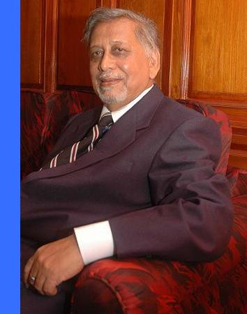

He is a well-known writer from Assam, India. AXOM SAHITYA SABHA selected him for prestigious “HEM BARUAH AWARD” for his excellence in creative writing during the year 1998.He created a niche for his path breaking style of writing. He has been basically a poet and a travel writer and now writes a regular Column each in two largest circulated Daily newspapers and one weekly paper of repute. His latest book on saving and Investment was a best seller. His latest book, Tea, legend, Life and livelihood of India was released in Rubin Museum , Manhattan, New York by Joe Simrani, President ofAmarican Tea Association and has become an International Best seller. The Government of India has decided to distribute the book to all the foreign delegates at the International Tea convention to be held from November 22nd, 2007.
Mr. Barua was the first person from the entire Private sector enterprise of the country to become the Banking Ombudsman of RBI for Northeastern region and for Bengal region during the year2000 to 2002.At present he occupies the position of Director on the board of B&A Ltd and on the board of India Carbon Limited and act as the “Principal Human Resource Advisor” of Morgan of U.K. who has taken over Assam Carbon Ltd. He is also a trustee of Balaji Temple trust as a representative of WM group. Mr. Barua had been the Group Corporate Vice president of the Williamson Magor Group, Kolkata for number of years and retired from the services in October 2000, but his services were retained by the company till 2004 as an advisor and there after trustees of Balaji Temple Trust and Assam Valley literary committee
As a socio-political critic on conflict resolution and economic affairs he has enormous contribution and in recognition of his contribution he was selected to head the Human Resource Committee of Indian Chamber of Commerce and Industry as well as Bengal Chambers of Commerce and Industry for several years. He was the founder General secretary of NECCI, Guwahati. He has authored six books of poems and wrote number of travelogues .Poetry and its recitation is his passion.He has one son and a daughter and now he divides his time among Guwahati,Kolkata & Los Angeles
